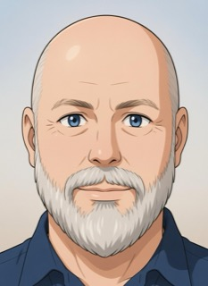

Joey Stanford
Open Source · Ham Radio · Data Privacy · Security
Affable open source, ham radio, data privacy, and security geek based in Colorado, USA — building decentralized tools and community infrastructure.

Open Source · Ham Radio · Data Privacy · Security
Affable open source, ham radio, data privacy, and security geek based in Colorado, USA — building decentralized tools and community infrastructure.